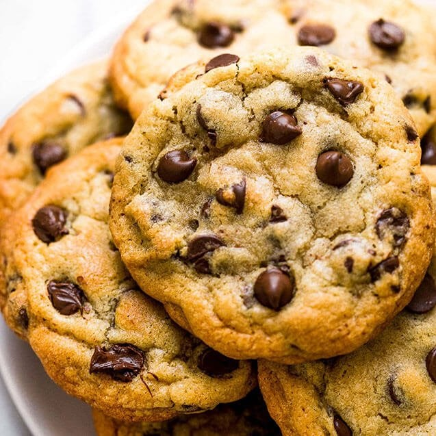

Chocolate Chip Cookies

Description
Chocolate chip cookies are an all time classic! Finding the right recipe can be tricky, though. This one guarantees crisp edges with ooey gooey middles. Enjoy!
Ingredients
- 1 cup butter, softened
- 1 cup white sugar
- 1 cup packed brown sugar
- 2 eggs
- 2 teaspoons vanilla extract
- 1 teaspoon baking soda
- 2 teaspoons hot water
- 1/2 teaspoon salt
- 3 cups all-purpose flower
- 2 cups semisweet chocolate chips
- 1 cup chopped walnuts
Steps
- Preheat oven to 350 degrees F
- Cream together the butter, white sugar, and brown sugar until smooth. Beat in the eggs one at a time, then stir in the vanilla. Dissolve baking soda in hot water. Add to batter along with salt. Stir in flour, chocolate chips, and nuts. Drop by large spoonfuls onto ungreased pans.
- Bake for about 10 minutes in the preheated oven, or until edges are nicely browned.
- Enjoy!
Back To Recipes